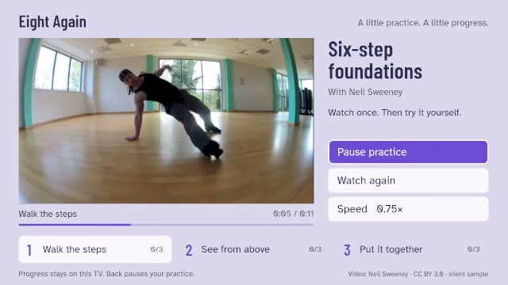
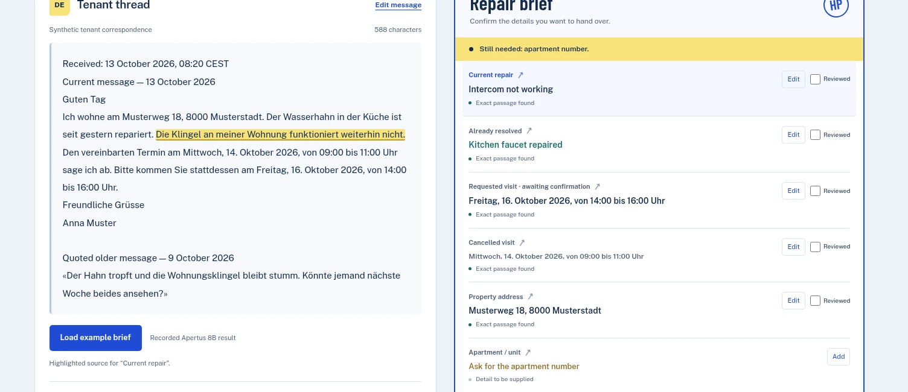
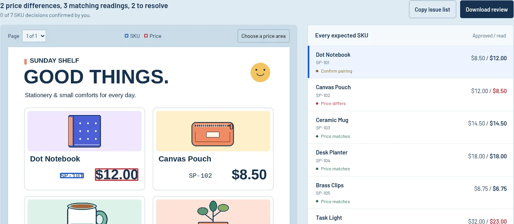
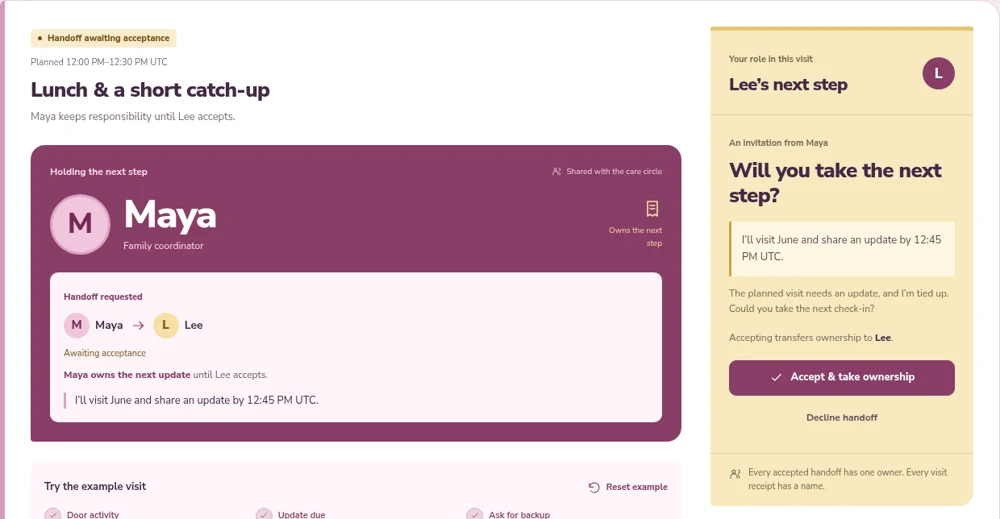
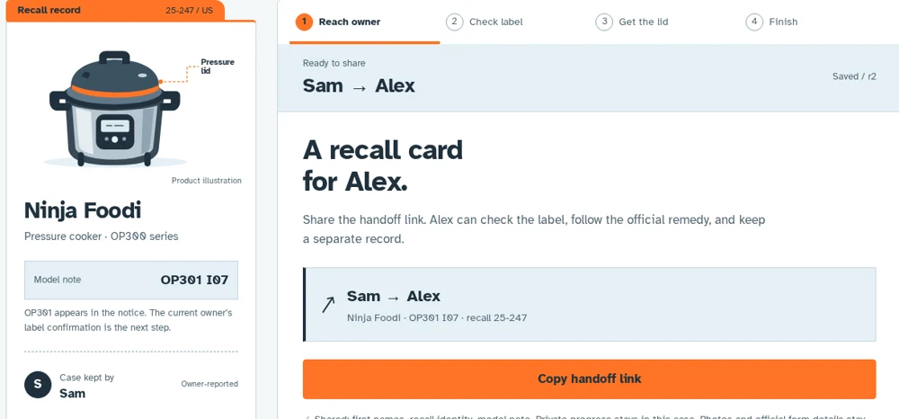
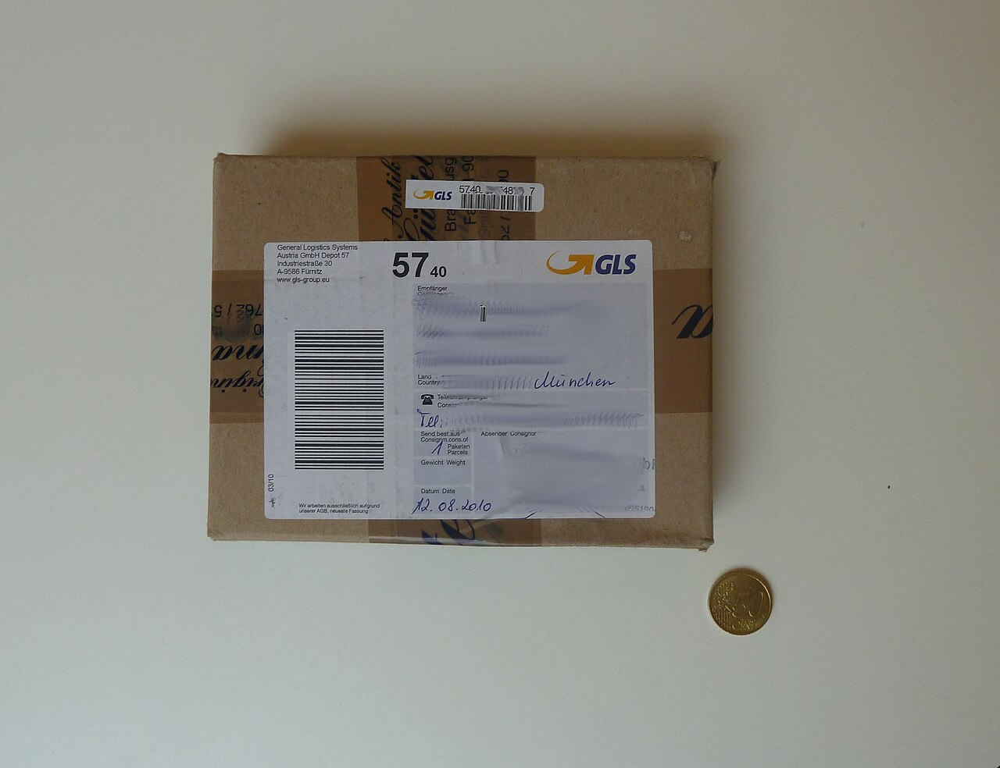

raincheck.
For a change of plansOne cancelled class. A good next plan for every guest.
Useful software for the moment you need a clear next step.
Check a price before print. Rebook a guest. Share a visit. Open a working product and see where it takes you.
The public Raincheck preview uses simulated payments and recorded AI.
One cancelled class. A good next plan for every guest.
Complete experiences, small tools,
and the source behind them.

Actual native app in the official Vega simulatorA little dance practice between classes. Use the TV remote to watch a phrase, get ready, practise, and watch it again. Choose 0.75× or 1×. Native development preview for Vega OS 1.2.
Free small-class teacher trial. Planned student price: US$9.99, paid once.
Lesson: Neil Sweeney / CC BY 3.0. Video transcoded; simulator frame cropped.
Actual Apertus 8B output on a fictional tenant threadTurn a multilingual tenant thread into the next repair handoff. Separate active faults, completed repairs and changed visits, then review each detail against the source. Run Apertus on your own infrastructure.
Discuss a CHF149 installation pilot for one office with an existing compatible host. Scope and delivery agreed first.

Fictional artwork, read by local OCRCatch a correct price beside the wrong product. Check a final PDF or image against your approved SKU price list, review each pairing, and download a correction sheet.
Ask about a US$29 review for up to 5 pages and 50 SKUs. Scope and delivery date agreed first.
Someone’s
got the next visit.

A fictional household, ready to tryA changed visit becomes a named handoff. Ask for backup, accept the visit, and leave a completion receipt.
New owner.
Same recall.

Pass a recall to the person who owns the appliance now. Keep their source-linked next step across conversations.
Follow a shipping claim from its original records to a reviewed amount and a downloadable evidence packet.
Catch five seconds of sound, follow one thing you hear for a minute, and bring back an observation.

A photo you
can work from.
A camera-to-fields desk that helps you retake, rectify, and review a label or paper document.
Photo: Klaus Mueller / CC BY-SA 3.0Test a workflow in the real n8n engine. Review its exact requests and outputs before release.
Compare workflow versions. Trace the impact and turn it into a readable release handoff.
Keep a live browser screen in step with an MCP assistant, through saved state and committed updates.
Real cases, runnable examples, and a closer look at the tricky part.
Procurement researchThree source changes and a five-task impact plan.
Recorded n8n experimentFind the retry boundary that replays a successful request.
Interactive field guideReproduce the URL regression and inspect the API contract.
Send the outcome you need, your current tools, and your timing. Feedback from trying a project is welcome, too.